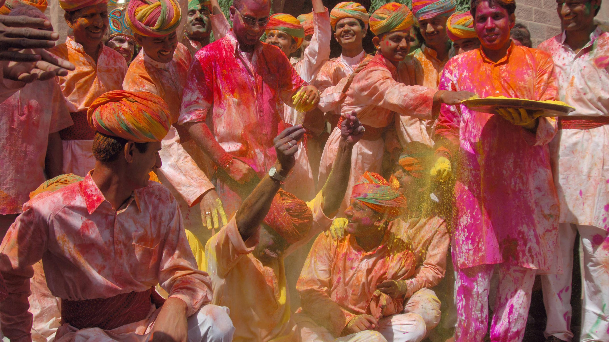
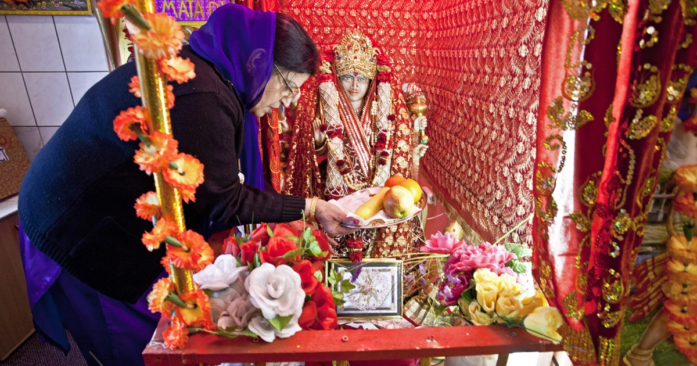
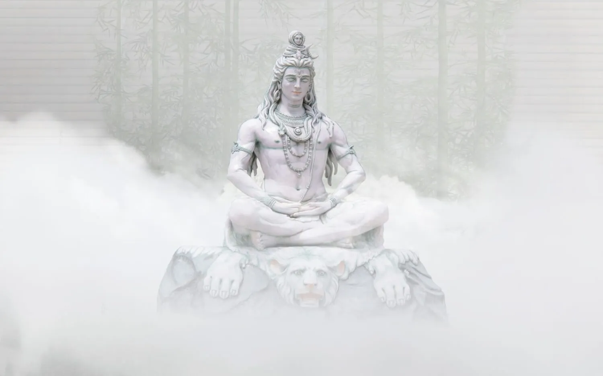

Rituale und Feste
Rituale
- Puja: Zeremonien zur Verehrung von Göttern, oft mit Gebeten, Gesang und Opfergaben.
- Homa: Feueropfer, bei dem Holz und Gaben in ein heiliges Feuer geworfen werden.
- Arti: Lichterzeremonie, bei der Lampen oder Kerzen vor den Göttern geschwenkt werden.
- Meditation und Yoga: Praktiken zur spirituellen Erleuchtung und inneren Ruhe.
- Samskaras: Lebensriten wie Geburt, Heirat und Tod (z. B. Namensgebung, Initiation, Hochzeit).
- Pilgerreisen: Reisen zu heiligen Stätten wie Varanasi, Tirupati und Rishikesh.
Feste
- Diwali: Lichterfest, das den Sieg des Lichts über die Dunkelheit symbolisiert.
- Holi: Frühlingsfest, bei dem Farben geworfen werden, um die Freude zu feiern.
- Navaratri: Neun Nächte der Verehrung der Göttin Durga.
- Durga Puja: Feier zur Verehrung von Durga, besonders in Bengalen.
- Raksha Bandhan: Fest der Geschwister, bei dem Geschwister ein Band tauschen und sich Schutz versprechen.
- Ganesh Chaturthi: Feier zu Ehren des Gottes Ganesha.
- Makar Sankranti: Erntedankfest, das den Sonnenwenden-Übergang markiert.
Holi:
Puja:
Yoga
Yoga ist eine spirituelle und körperliche Praxis, die ihren Ursprung im Hinduismus hat und auf der Vereinigung von Körper, Geist und Seele basiert. Das Wort "Yoga" stammt aus dem Sanskrit und bedeutet „Vereinigung“ oder „Zusammenschluss“. Ziel des Yoga ist es, das körperliche Wohlbefinden zu fördern, geistige Klarheit zu erlangen und spirituelle Erleuchtung zu erreichen. Es geht darum, Harmonie zwischen Körper und Geist zu schaffen, was durch verschiedene Techniken wie Körperhaltungen (Asanas), Atemübungen (Pranayama) und Meditation erreicht wird.
Im Hinduismus wird Yoga als ein Weg zur Selbstverwirklichung und zur Erreichung von Moksha (Befreiung) betrachtet. Es gibt verschiedene Formen von Yoga, die unterschiedliche Aspekte der menschlichen Existenz ansprechen:
- Hatha Yoga: Ein physischer Ansatz, der sich auf Asanas (Körperhaltungen) und Atemübungen konzentriert, um den Körper zu stärken und den Geist zu beruhigen. Es ist eine der bekanntesten Formen des Yoga, die in westlichen Ländern weit verbreitet ist.
- Raja Yoga: Der „königliche Weg“ des Yoga, der die Meditation als Hauptpraxis betont. Hier geht es um die Entwicklung mentaler Disziplin und spiritueller Einsicht.
- Karma Yoga: Der Weg des selbstlosen Handelns, bei dem man Taten ausführt, ohne an den Ergebnissen festzuhalten, um spirituelle Reinheit zu erlangen.
- Bhakti Yoga: Der Yoga der Hingabe, bei dem der Praktizierende Gott mit Liebe und Hingabe verehrt. Ziel ist es, durch diese Hingabe spirituelle Erleuchtung zu erlangen.
- Jnana Yoga: Der Yoga des Wissens und der Weisheit, bei dem durch das Studium von heiligen Schriften und durch Nachdenken über die wahre Natur des Selbst Erleuchtung erlangt wird.
Yoga ist nicht nur eine körperliche Übung, sondern auch ein Weg, das eigene Bewusstsein zu erweitern und eine tiefere Verbindung zum Göttlichen zu erfahren. Es ist eine Praxis, die sowohl den Körper als auch den Geist fördert und als ein zentrales Element hinduistischer Spiritualität angesehen wird.
Zurück zum Hauptmenü